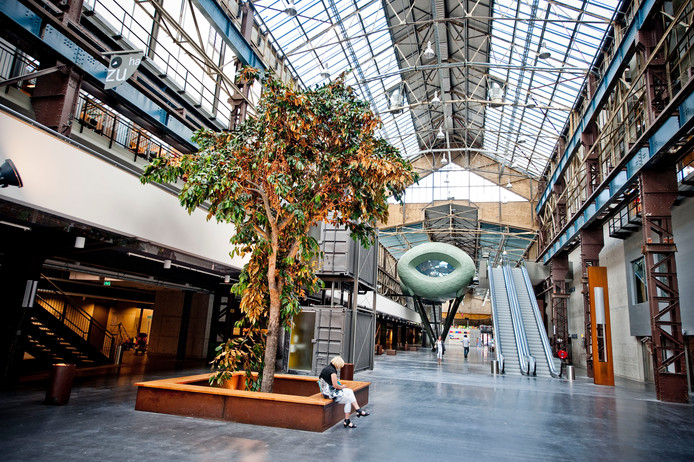

Wij zijn Julian, Mike en Bram. Wij doen ons project over "kraak de kluis", en wij zitten op het ROC Van Twente in Hengelo. Wij doen de opleiding Applicatie en Mediabeheer op de afdeling ICT en werken samen in het scrum groepje. Kraak de kluis is ons project en de bedoeling van het spelletje is dat je moet raden wat de 4 cijferige code is om de kluis te openen, wie het als snelst heeft gekraakt wint.
